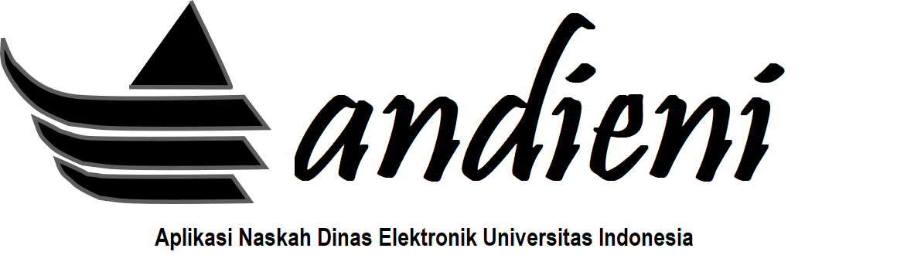

Panduan Online Andieni¶

Andieni - Aplikasi Naskah Dinas Elektronik Universitas Indonesia. Merupakan aplikasi yang dibuat dengan tujuan memudahkan penciptaan naskah dinas (nota dinas dan surat dinas). Memanfaatkan teknologi informasi sejak penyusunan draft, persetujuan atasan, pengesahan dengan tanda tangan digital, serta distribusi ke tujuan naskah secara elektronik. Andieni mampu menghadirkan sebuah solusi nyata bagi peningkatan kinerja dan produktifitas UI dalam administrasi persuratan.
Andieni menggunakan teknologi tanda tangan digital atau disebut juga tanda tangan elektronik tersertifikasi (eSign). Dokumen digital yang telah disematkan sertifikat elektronik akan terenkripsi sehingga segala bentuk manipulasi konten dokumen akan terlacak dengan menyatakan bahwa dokumen telah diubah sejak ditandatangani terakhir. eSign yang digunakan pada Andieni merupakan hasil dari kerja sama kemitraan antara UI dengan Balai Sertifikasi Elektronik (BSrE). Balai Sertifikasi Elektronik merupakan unit pelaksana teknis di Badan Siber dan Sandi Negara (dahulu Lembaga Sandi Negara) yang memiliki tugas pemberian layanan penerbitan dan pengelolaan sertifikat elektronik di Indonesia untuk instansi pemerintah.
Panduan ini berisi informasi penggunaan andieni bagi pelaksana, sekretaris, dan pimpinan